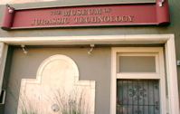

同僚のToddと一緒にL.A.郊外にある「ジュラシック・テクノロジー博物館」へ。
とても小さな博物館なのでToddの案内がなければ多分辿り着けなかったと思います。言うなればフェイク博物館。入り口で大仰に語られる博物館の生い立ちからかなり嘘ぽい(大戦中にコレクションの大部分が失われ…みたいな)です。

展示内容も、人間から生えて来たという角、サファイアを人工的に精製する実験装置(金槌で筒をカンカン叩いてるだけに見える)、蟻に寄生して死にいたらしめるキノコ、X線を出して物体を通り抜けるコウモリを鉛板で捕獲した科学者の実験室について、円錐と平面かならなる人間の記憶モデルを発案した心理学者の偽バイオグラフィ、山の上の天文学者宛に届いた狂人からの手紙、など変なものばっかり。
僕が英語を読むのが非常に遅いこともあって、あの小さな博物館に３時間くらいいました。分からないところを解説してくれたToddには感謝です。ゲッティ・センター行ってよく分からない宗教画を見るよりは断然刺激的な体験でしたよ。オススメ！(ごく一部の人に向けて)
その後、インドネシア料理を食って帰宅。死ぬほどうまくて、舌がもげるかと思った。アジア食万歳！
この博物館は、みすず書房から出てる『ウィルソン氏の驚異の陳列室』という本に詳しいらいいですが、僕は未読です。
ほとんどのマネージャは、今日でこちらでの仕事を終了。
というわけで今日ばかりは、夕食に引っ張って行かれました。しがらみ飲み、表面をにこやかに取り繕いながら、お互いの腹をさぐり、当たり障りのない会話でそれをかわす、この感じ、久しぶりです。思い出しました。
そんな僕には「どう？こっちで楽しくやってる？」と聞かれて「別に楽しくはないです」と答えるのが精一杯でした(全然こなせてません)。
日本からマネージャ数人がワークショップのためにやって来ました。アメリカ側とスケジュールの調整などをするのが目的です。
というわけで、昼間はワークショップに出て話を聞いて、夕方から普段の業務をするという二重生活に突入。ワークショップ後に、みんなはディナーとかに出かけて、僕だけ居残り仕事です。何かがおかしい何かが！(ユニコーン風に)
でも、偉い人との会食とかテーブルマナーとか考えるとこっちの方が断然楽だということに気づきました。発想を逆転させるんだ！
ちなみに残業のお供は、TRADER JOEで買ったチリ味ピスタチオです。チリ味とは言うものの、ほとんどの辛味成分は殻に付着していて、ピスタチオ自体の味にはあまり影響を与えていません。
ZEN(禅)ぽいね！
ティム・バートン監督『ビッグ・フィッシュ』のDVDを買ったので、家でコークとピザをお供に鑑賞(アメリカぽい)。結果、みっともないくらいにボロボロと泣く。
途中までは「バートンは本当にフリークスが好きだなぁ」と余裕をかまして見ていたんですが、最後の30分で完全にやられました。ささやかでさりげなくて、でもそこが最高によかったです。
第三者から少しだけ語られる「もう一つのつまらない物語」が、物語の住人たちに「この現実の世界」での舞台を用意するところと、そして何より、最後の息子のアレ、それに対する父親の言葉で、もう死ぬほどの涙が。
バートンの映画で一番好きかもしれません。心の大事なところにしまっておくことにします。言うなれば「さよならドラえもん」とか「のび太の結婚前夜」級。スゲェ。